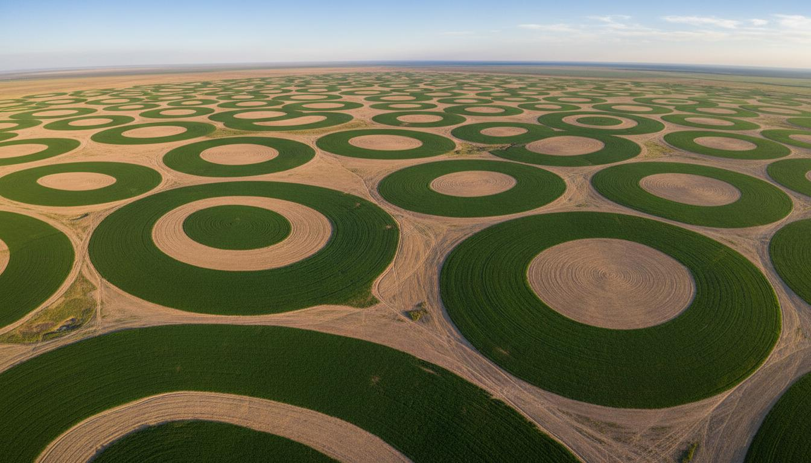

Научная программа в Республике Казахстан (2025-2027)
В настоящее время человечество осознает преимущества потребления органической продукции в обеспечении качества жизни, в достижении экономических, социальных и экологических выгод для будущего поколения людей. Предотвращение загрязнения окружающей среды посредством запрета использования химических и иных веществ, различных пестицидов в органическом производстве способствует смягчению последствий изменения климата, рациональному использованию природных ресурсов, обеспечению устойчивого развития.
Цель проекта заключается в комплексном анализе и разработке предложений по совершенствованию правового регулирования производства и оборота органической сельскохозяйственной продукции в Казахстане, а также изучение существующих правовых норм, выявление пробелов и противоречий в законодательстве, а также разработку рекомендаций для создания более эффективной и устойчивой правовой базы.
Программа реализуется в три этапа с 2025 по 2027 год
Нормативно-правовые акты, регулирующие органическое производство
Основной нормативный акт, регулирующий органическое производство в Республике Казахстан. Устанавливает требования к производству, сертификации и маркировке органической продукции, определяет права и обязанности производителей.
Статья 31: Право на благоприятную окружающую среду. Статья 36: Право на свободное использование земли. Конституционные основы экологической безопасности и рационального использования природных ресурсов.
Регулирование земельных отношений, использование земель сельскохозяйственного назначения. Правовой режим земель органического сельского хозяйства.
Охрана окружающей среды, экологическая безопасность производства. Регулирование использования пестицидов и агрохимикатов в сельском хозяйстве.
Международная федерация органического сельского хозяйства движений. Базовые стандарты для органического производства, признанные в 170+ странах мира. Определяют принципы здоровья, экологии, справедливости и осторожности.
Международные пищевые стандарты, разработанные ФАО и ВОЗ. Устанавливают общие принципы и требования к органическому производству продуктов питания на международном уровне.
Органическое производство и маркировка органических продуктов. Базовый регламент Европейского Союза, устанавливающий принципы, цели и общие правила органического производства.
Детальные правила применения Регламента (ЕС) № 834/2007 в отношении производства, маркировки и контроля органических продуктов. Технические требования и процедуры сертификации.
Команда ученых из различных областей знаний
Руководитель программы
Ведущий научный сотрудник
Научный сотрудник
Научный сотрудник
Младший научный сотрудник
Научный сотрудник
Научные работы, созданные в рамках программы
Journal of Actual Problems of Jurisprudence
DOI: 10.26577/JAPJ202511539
ОткрытьАлматы, «AQQALAM», 137 стр.
Открыть